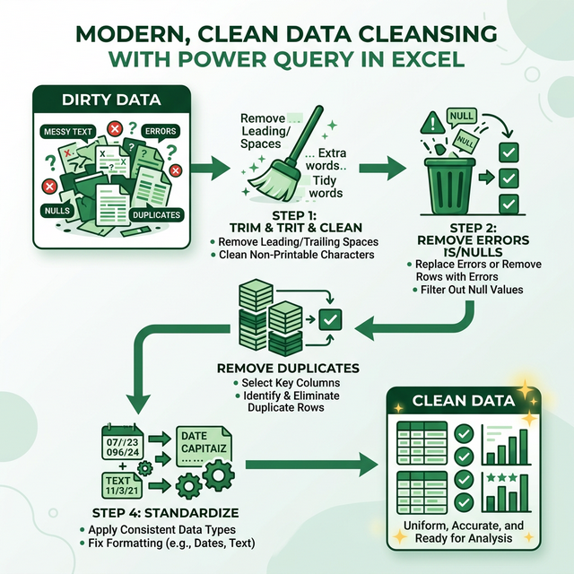

Làm sạch dữ liệu trong Power Query
Nắm vững kỹ thuật làm sạch dữ liệu: Trim, Clean, Remove Duplicates, xử lý Error/Null, Column Quality/Distribution/Profile.
10.1 Tại sao phải làm sạch dữ liệu?
Dữ liệu thực tế luôn chứa "nhiễu" — khoảng trắng thừa, lỗi chính tả, giá trị null, dòng trùng lặp, định dạng không đồng nhất. Data Cleansing là bước quan trọng nhất trong quy trình ETL.

Dữ liệu bẩn
Khoảng trắng thừa, ký tự đặc biệt, dạng text không nhất quán → phân tích sai
Dữ liệu sạch
Chuẩn hóa, nhất quán, không lỗi → phân tích chính xác, báo cáo tin cậy
10.2 Trim, Clean và Format Text
Trim (Xóa khoảng trắng)
Xóa khoảng trắng thừa ở đầu và cuối chuỗi:
- Chọn cột → Transform → Format → Trim
- M code: Text.Trim([CotText])
Clean (Xóa ký tự non-printable)
Xóa ký tự điều khiển không hiển thị (tab, line break, carriage return...):
- Chọn cột → Transform → Format → Clean
- M code: Text.Clean([CotText])
Format Text
| Chức năng | Đường dẫn | M code |
|---|---|---|
| UPPERCASE | Transform → Format → UPPERCASE | Text.Upper([Col]) |
| lowercase | Transform → Format → lowercase | Text.Lower([Col]) |
| Capitalize Each Word | Transform → Format → Capitalize | Text.Proper([Col]) |
| Trim + Clean | Áp dụng cả hai | Text.Clean(Text.Trim([Col])) |
10.3 Remove / Replace Errors
Xử lý các giá trị lỗi (Error) trong dữ liệu:
| Thao tác | Cách thực hiện | M code |
|---|---|---|
| Remove Errors (xóa dòng lỗi) | Chọn cột → Home → Remove Rows → Remove Errors | Table.RemoveRowsWithErrors(Source, {"CotA"}) |
| Replace Errors (thay thế lỗi) | Chọn cột → Transform → Replace Errors | Table.ReplaceErrorValues(Source, {{"CotA", 0}}) |
| Keep Errors (chỉ giữ dòng lỗi) | Chọn cột → Home → Keep Rows → Keep Errors | Table.SelectRowsWithErrors(Source, {"CotA"}) |
10.4 Xử lý giá trị Null
| Thao tác | Cách thực hiện |
|---|---|
| Replace null bằng giá trị cụ thể | Transform → Replace Values → Value to Find: null → Replace With: giá trị mới |
| Remove Blank Rows | Home → Remove Rows → Remove Blank Rows |
| Fill Down (điền giá trị xuống) | Chọn cột → Transform → Fill → Down |
| Fill Up (điền giá trị lên) | Chọn cột → Transform → Fill → Up |
// Thay null bằng giá trị mặc định
= if [GiaTri] = null then 0 else [GiaTri]
// Thay null bằng giá trị từ cột khác
= if [Email] = null then [EmailPhu] else [Email]
// Đếm số null trong cột
= List.Count(List.Select(Table.Column(Source, "CotA"), each _ = null))10.5 Remove Duplicates (Xóa dữ liệu trùng)
- Chọn một hoặc nhiều cột làm tiêu chí
- Home → Remove Rows → Remove Duplicates
- Power Query giữ lại dòng đầu tiên của mỗi nhóm giá trị trùng
10.6 Remove / Keep Rows
Các thao tác lọc dòng trong tab Home → Remove Rows / Keep Rows:
| Nhóm | Thao tác | Mô tả |
|---|---|---|
| Remove Rows | Remove Top Rows | Xóa N dòng đầu |
| Remove Bottom Rows | Xóa N dòng cuối | |
| Remove Alternate Rows | Xóa dòng xen kẽ | |
| Remove Duplicates | Xóa dòng trùng | |
| Remove Blank Rows | Xóa dòng trống | |
| Keep Rows | Keep Top Rows | Giữ N dòng đầu |
| Keep Bottom Rows | Giữ N dòng cuối | |
| Keep Range of Rows | Giữ từ dòng X, Y dòng | |
| Keep Duplicates | Chỉ giữ dòng trùng |
10.7 Parse Values
Phân tích giá trị JSON hoặc XML chứa trong cột text:
- Parse JSON: Chọn cột text chứa JSON → Transform → Parse → JSON
- Parse XML: Chọn cột text chứa XML → Transform → Parse → XML
Sau khi parse, sử dụng các nút Expand (↔️) để mở rộng cấu trúc lồng nhau.
10.8 Advanced Text Analytics (Phân tích văn bản nâng cao)
Power Query có thể thực hiện keyword search và phân tích văn bản mà không cần Python/R:
Tìm kiếm keyword trong cột text
// Kiểm tra cột "MoTa" có chứa từ khóa không
= Table.AddColumn(Source, "CoKhuyenMai", each
Text.Contains(Text.Lower([MoTa]), "khuyến mãi")
or Text.Contains(Text.Lower([MoTa]), "giảm giá")
or Text.Contains(Text.Lower([MoTa]), "sale"),
type logical)Tìm kiếm từ danh sách keyword bên ngoài
Thay vì hardcode, dùng bảng keyword riêng (dễ cập nhật):
// Bảng Keywords: keyword | NhomTu
// "khuyến mãi" | "Promotion"
// "lỗi" | "Issue"
// "trả hàng" | "Return"
= Table.AddColumn(Source, "MatchedKeywords", each
let moTa = Text.Lower([MoTa]) in
Table.SelectRows(Keywords,
each Text.Contains(moTa, Text.Lower([keyword]))
)[NhomTu]
)
// Kết quả: list các nhóm từ phù hợp cho mỗi dòngĐếm số từ & Extract từ quan trọng
// Đếm số từ
= Table.AddColumn(Source, "SoTu", each
List.Count(Text.Split(Text.Trim([MoTa]), " ")),
Int64.Type)
// Extract N từ đầu tiên
= Table.AddColumn(Source, "TomTat", each
let words = Text.Split(Text.Trim([MoTa]), " "),
first5 = List.FirstN(words, 5)
in Text.Combine(first5, " ") & "...",
type text)
// Tìm từ xuất hiện nhiều nhất
= let
AllWords = List.Combine(
List.Transform(Source[MoTa],
each Text.Split(Text.Lower(Text.Trim(_)), " "))),
WordCount = List.Transform(List.Distinct(AllWords),
(w) => [Word = w, Count = List.Count(
List.Select(AllWords, each _ = w))]),
Sorted = List.Sort(WordCount,
each [Count], Order.Descending)
in Table.FromRecords(List.FirstN(Sorted, 20))10.9 Data Validation từ Power Query Output
Tạo dropdown list tự động cập nhật từ dữ liệu Power Query:
Cách 1: Dùng Table Reference
- Load PQ → Table (VD:
tbl_KhachHang) - Chọn ô cần dropdown → Data → Data Validation
- Allow: List → Source:
=INDIRECT("tbl_KhachHang[HoTen]")
Cách 2: Dùng Dynamic Named Range
- Tạo Named Range:
=UNIQUE(tbl_KhachHang[ThanhPho]) - Data Validation → Source:
=rng_ThanhPho
Cách 3: Dependent Dropdowns (phụ thuộc nhau)
// Dropdown 1: Chọn Tỉnh/TP
= UNIQUE(tbl_DiaChi[TinhTP])
// Dropdown 2: Quận/Huyện theo Tỉnh đã chọn
= UNIQUE(FILTER(tbl_DiaChi[QuanHuyen],
tbl_DiaChi[TinhTP] = $B$2))
// $B$2 = ô chứa giá trị dropdown 110.10 Column Diagnostics (Chẩn đoán chất lượng dữ liệu)
Power Query cung cấp 3 công cụ phân tích chất lượng dữ liệu (View tab):
| Công cụ | Hiển thị | Hữu ích khi |
|---|---|---|
| Column Quality | % Valid ✅ | Error ❌ | Empty ⬜ cho mỗi cột | Nhanh chóng tìm cột có vấn đề |
| Column Distribution | Distinct values + Unique values (histogram) | Phát hiện trùng, outlier |
| Column Profile | Statistics chi tiết: min, max, avg, std, count, null% | Phân tích sâu 1 cột cụ thể |
10.11 Chuẩn hóa Geographic & Categorical Fields
Dữ liệu địa lý/phân loại thường không đồng nhất. Chuẩn hóa bằng Replace + Mapping Table:
// Chuẩn hóa tên tỉnh/thành phố
= Table.ReplaceValue(Source, each [ThanhPho], each
let tp = Text.Trim(Text.Lower([ThanhPho])) in
if Text.Contains(tp, "hcm") or Text.Contains(tp, "sài gòn")
or Text.Contains(tp, "saigon") or Text.Contains(tp, "sg")
then "TP.HCM"
else if Text.Contains(tp, "hà nội") or Text.Contains(tp, "hanoi")
or Text.Contains(tp, "hn")
then "Hà Nội"
else Text.Proper([ThanhPho]),
Replacer.ReplaceValue, {"ThanhPho"})
// Hoặc dùng Mapping Table (chuyên nghiệp hơn)
// MappingTable: RawName | StandardName
= Table.NestedJoin(Source, "ThanhPho",
MappingTable, "RawName", "Map", JoinKind.LeftOuter)
// → Expand Map[StandardName]Bài tập 10.1: Làm sạch dữ liệu cơ bản
Mục tiêu: Thực hành Trim, Clean, Remove Duplicates, Replace null
- Tạo bảng với dữ liệu "bẩn":
HoTen Email SoDT DiaChi nguyễn văn an an@company.com 0912345678 HCM TRẦN THỊ BÌNH 0987654321 Hà Nội nguyễn văn an an@company.com 0912345678 HCM Lê Hoàng Châu chau@gmail.com - Mở Power Query
- Chọn cột HoTen → Transform → Format → Trim → Capitalize Each Word
- Chọn cột HoTen → Home → Remove Rows → Remove Duplicates
- Chọn cột DiaChi → Transform → Replace Values → null → "Không rõ"
- Bật View → Column Quality → quan sát phần trăm Valid/Empty/Error
- Close & Load
Bài tập 10.2: Xử lý Error và Null nâng cao
Mục tiêu: Xử lý lỗi và giá trị null phức tạp
- Tạo bảng:
SanPham GiaBan SoLuong GiamGia Laptop 15000000 10 5% Chuột 350000 abc Bàn phím không rõ 30 10% Màn hình 5500000 20 15% - Đổi cột SoLuong → Whole Number (dòng "abc" sẽ thành Error)
- Đổi cột GiaBan → Number (dòng "không rõ" sẽ thành Error)
- Transform → Replace Errors → nhập 0
- Replace null trong GiamGia → "0%"
- Bật Column Quality + Column Profile → kiểm tra kết quả
- Close & Load
Bài tập 10.3: Quy trình làm sạch hoàn chỉnh
Mục tiêu: Áp dụng toàn bộ kỹ thuật cleansing
- Tạo bảng doanh thu 20 dòng với các vấn đề: khoảng trắng thừa, dòng trùng, cột chứa null, format số không đồng nhất
- Áp dụng quy trình:
- Bước 1: Trim + Clean tất cả cột text
- Bước 2: Remove Blank Rows
- Bước 3: Remove Duplicates
- Bước 4: Replace Errors bằng 0
- Bước 5: Fill Down cho cột có null
- Bước 6: Chuẩn hóa text (Proper case)
- Bật Column Quality + Profile → xác nhận 100% Valid
- Close & Load